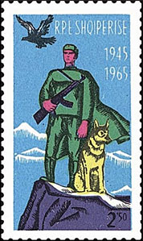
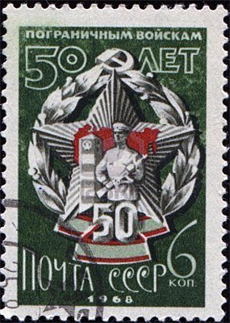
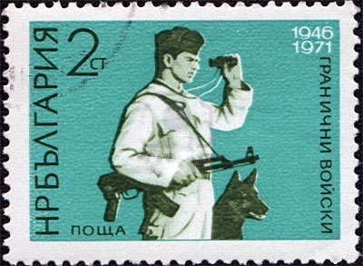
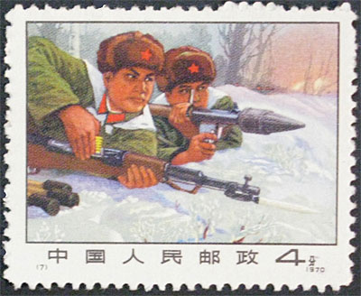
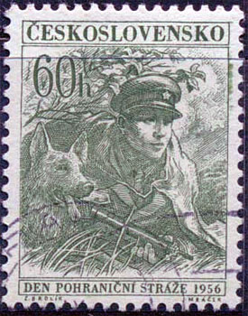
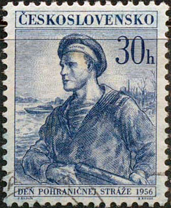
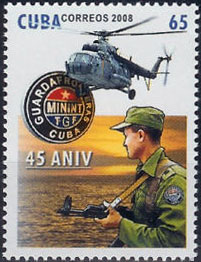

BORDER TROOPS IN COMMUNIST COUNTRIES
A lifetime lesson for adults
"...the frontiers are my prison."
Leonard Cohen, The PartisanI had the opportunity to read an interesting article in the newest Linn's Stamps News, Sept. 24, 2012, p. 32. It appeared under the title: "Refresher Course, by Janet Klug. New Stamps Tech program: stamp lesson that last a lifetime."
A passage of it retained my attention: "It looks as though there are a lot of mountains, which are indicated on the stamp, but where is the frontier and why did it need to be guarded? You tell the child that you both are stamp detectives looking for clues. "
The 1965 Albanian stamp (Sc. 807) that illustrates the article is indeed intriguing. What are the soldier and his dog on the top of that mountain actually guarding? Unfortunately, the explanation goes well beyond the understanding of "grades 3 through 5" children (aged 8 - 11), the reason why I subtitled this article "A lifetime lesson for adults."

I will focus in my explanation on Soviet Border Troops, that served as example for all similar troops in former and present communist countries.
Soviet Border Troops were the militarized border guard of the Soviet Union, subordinated to its subsequently reorganized state security agency: first to Cheka/OGPU, then to NKVD/MGB and, finally, to KGB. Accordingly, they were known as NKVD Border Troops and KGB Border Troops . Unlike border guards of many other countries, Soviet Border Troops also included the maritime borderguarding units (i.e., a coast guard). NKVD Border Troops consisted of infantry, cavalry, reconnaissance, naval and airforce units.

Soviet Border Troops duties included repulsing armed incursions into Soviet territory; preventing illegal crossings of the border or the transport of weapons, explosives, contraband, or subversive literature across the border; monitoring the observance of established procedures at border crossing points; monitoring the observance by Soviet and foreign ships of navigation procedures in Soviet territorial waters; and assisting state agencies in the preservation of natural resources and the protection of the environment from pollution. Border guards were authorized to examine documents and possessions of persons crossing the borders and to confiscate articles; to conduct inquiries in cases of violations of the state border; and to take such actions as arrest, search, and interrogation of individuals suspected of border violations.
After the Molotov–Ribbentrop Pact, the Border Troops assisted the pacification of the newly-acquired Soviet territory adjoining the state border. The mass execution of Romanian civilians known as the Fântâna Albă massacre happened at this time. Source


The duty, shortly mentioned above as "preventing illegal crossings of the border", deserves a special attention because it was the main activity of border troops during peace time. In 1948, in the debate of a Universal Declaration of Human Rights, the Soviets objected to the language that "everyone has the right to leave any country including his own." Arguing that "it would encourage emigration", the Soviets wanted to add the phrase "in accordance with the procedure laid down in the laws of that country", with only Poland and Saudi Arabia supporting the Soviet proposal.


Defection attempts from the Soviet Union were governed by two laws: (i) illegal traveling abroad without a passport was a crime punishable by one to three years in prison, even in cases where the destination was another Eastern Bloc country; and (ii) illegal defection to a non-Eastern Bloc state and refusal to return home was considered treason against the state.
Like in the Soviet Union, attempting to leave without permissions to a non-Eastern Bloc state was punishable as treason, with Albania and Romania invoking the death penalty for such offenses. Source
The border troops had the right to shoot down anyone who tried to escape the communist "happiness", and they largely made usage of this right, because they were very well rewarded for their actions, classified as crimes in the free world. Thousands of citizens were shot when escaping from the East Berlin to the West one or from Romania to Yugoslavia by crossing the Danube river at night. Those who were caught were beaten and then punished by long years of imprisonment. Sometimes they were even executed. Their familiy members usually lost their jobs and the children the right to study. The cemeteries in Yugoslavian villages, situated along the Danube, display hundreds of nameless crosses, set above the unidentified victims shot by the Romanian border troops. The corpses were brought by the river to the Yugoslav shore, and they were burried by the vilagers.

We show on this page different stamps, issued by former and present day (Cuba) communist countries, that display the frontier guards, ostentatiously defending the territory of their countries.
The Albanian stamp, which we placed on the top of the page, is one of the most striking in suggesting that border guards needed a large view of the territory they were supposed to protect, and on which they were controlling and terrorizing their fellow citizens. I believe that this stamp is not a good choice for explaining to US children which is the role of the border guards.
The Sino-Soviet border conflict was a seven-month military conflict between the "peace seeking" Soviet Union and China at the height of the Sino-Soviet split in 1969. Source The Chinese stamp displayed above, issued in 1970, seems to commemorate the then "fratricide" fighting. The combatants on both sides were marked with five-pointed red stars, the symbol of communism.
One can wonder what actually sees through its binocular the guard shown on the Bulgarian stamp. It looks like he checks whether the lenses of his binocular need cleaning.
Point the mouse index on the stamps for more information.
Created: 09/10/2012. Revised: 1/11/2024.
Copyright © 2012 - 2024 by Victor Manta, Switzerland/USA.
All rights reserved worldwide.